Section Summary: Controlling space attributes and operations using the JMX console.
Overview
The Java Management Extensions (JMX specification) describe an architecture, design patterns, API's, and services for application and network management in the Java programming language. JMX functions beyond a simple API since it can specify the architecture as to how that API is used. It provides the means to construct Java code, create smart Java agents, implement distributed management middleware and managers, and integrate these solutions smoothly into existing management systems. You can integrate such solutions with either HTML or industry standards such as SNMP and WBEM. JMX is dynamic, allowing the monitoring and management of resources in real time while they are created, installed, and implemented. The JMX also works along with JVM, the Java Virtual Machine.
 For more details about JMX, refer to: http://java.sun.com/products/JavaManagement/.
For more details about JMX, refer to: http://java.sun.com/products/JavaManagement/.
Manageable Resource
A JMX manageable resource can be an application, an implementation of a service, a device, a user, etc. It is developed in Java, or at least offers a Java wrapper, and must also be implemented by a Java object called a managed bean (MBeans), according to JMX specifications.
Opening JMX
- The easiest way to open JConsole for a specific service is through the GigaSpaces Management Center:
- In the Deployments tab, right-click the GSC, GSM, or LookupService tree node, or
- In the Space Browser tab:
- In the Grid Tree, right-click the relevant space container node, or
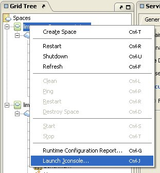 - Right-click the relevant space node or clustered space node, or

- Right-click the relevant space from the space network view:
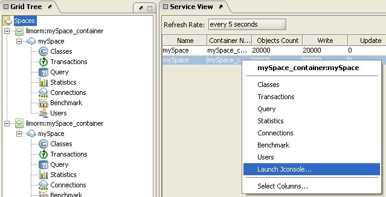
- In the Grid Tree, right-click the relevant space container node, or
- Click Launch JConsole.
 Launching JConsole using the Space Browser tab is new in GigaSpaces version 6.5 and onwards.
Launching JConsole using the Space Browser tab is new in GigaSpaces version 6.5 and onwards. - This opens the JConsole (only if you are running JDK 1.5 and above) of the selected process.
- You can browse the various MBeans.
- Make sure you have a gsInstance running (<GigaSpaces Root>\bin\gsInstance.bat/sh).
- Open a console and type the following command:
jconsole
 By default, operations in the MBeans Operations tab which have GigaSpaces classes as their type are disabled. To enable these, type
By default, operations in the MBeans Operations tab which have GigaSpaces classes as their type are disabled. To enable these, typejconsole -J-Djava.class.path=%JAVA_HOME%\lib\jconsole.jar;GS_HOME\lib\JSpaces.jar
in your console. Instead of GS_HOME, type the directory in which GigaSpaces is installed on your computer.
- Connect to the MBean server (choose one of the following options):
- Using the Advanced tab:
- The JConsole: Connect to Agent window appears. Select the Advanced tab.
- In the JMX URL text box, copy the URL in the log message displayed in your GigaSpaces Server, for example:
INFO: New JMXConnectionServer was successfully registered into the MBeanServer using service url: service:jmx:rmi:///jndi/rmi://localhost:10098/jmxrmi
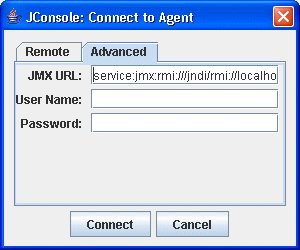
- Press Connect.
- Using the Remote tab:
- The JConsole: Connect to Agent window appears. Select the Remote tab.
- In the Host or IP text box, copy the host name/IP address from JNDI URL text field in the container configuration.
- In the Port text box, copy the port value from the same JNDI URL text field in the container configuration.
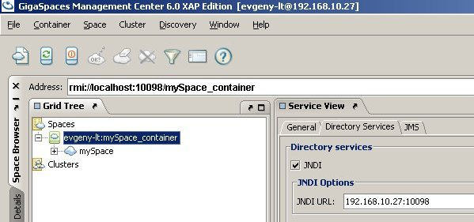
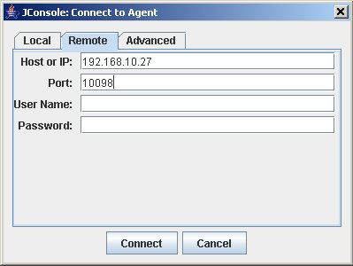
- Press Connect.
Here is a code example of implementing such an approach:IJSpace spaceProxy = ( IJSpace )SpaceFinder.find( "jini://mySpace_container/mySpace"); System.out.println( "Space found: " + spaceProxy.toString() ); ContainerConfig containerConfig = ( ( IJSpaceContainerAdmin )spaceProxy.getContainer() ).getConfig(); String jndiURL = containerConfig.jndiUrl; Runtime.getRuntime().exec( "jconsole " + jndiURL );
- Using the Advanced tab:
Remote JConsole connection
In order to enable monitoring and management from remote systems using JMX jconsole set the following system properties or use the setenv shell variable REMOTE_JMX
REMOTE_JMX=-Dcom.sun.management.jmxremote.port=5001 -Dcom.sun.management.jmxremote.ssl=false -Dcom.sun.management.jmxremote.authenticate=false
Viewing Thread CPU Usage with JDK 1.6
 This feature is new in GigaSpaces version 6.5 and onwards.
This feature is new in GigaSpaces version 6.5 and onwards.
JConsole includes a new tab that displays CPU usage for each JVM thread. This tab is displayed using the -pluginpath JConsole parameter (already implemented in GigaSpaces).
To view this tab in your JConsole:
- Install JDK 1.6 – download JDK 6 Update 2 as seen below:
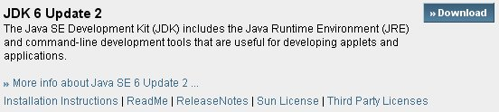
- Download the topthreads.jar file and add it to your <GigaSpaces Root>\lib\ui folder.
 topthreads.jar is used by default. If topthreads.jar isn't found, the JTop.jar file (which is part of the JDK) is used instead.
topthreads.jar is used by default. If topthreads.jar isn't found, the JTop.jar file (which is part of the JDK) is used instead.
Below are some example screenshots:
topthread.jar
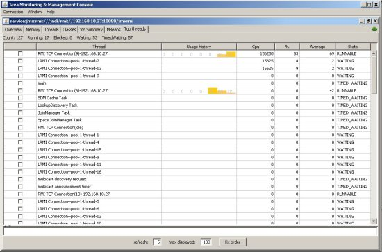
JTop.jar
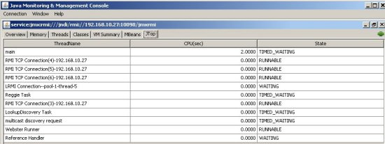
MBeans View
The jconsole utility (part of Sun J2SE 5.0 JDK and above) includes a MBeans view, which allows you to perform space administration operations, and to view and control space attributes. These operations are defined in the JavaSpaceMBeanDescriptors.xml file, which exists in the JSpaces.jar file. If you do not want a certain operation or attribute to be exposed in the JMX MBeans tab, simply comment or remove the operation from the XML file.
Space Container MBean
The container MBean exposes the space container's attributes and operations. The space container manages the space life cycle.
Attributes Tab
The container Attributes tab displays a list of container attributes. Attribute values appearing in blue can be controlled, while values in black can not be changed. Red values are unavailable.
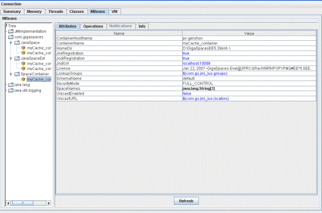
Operations Tab
The container Operations tab allows you to perform different space container operations:
- shutdown – shuts down this container.
- restart – restarts this container.
- destroySpace – destroys a space in this container (type the space's name in the spaceName text box).
- createSpace (spaceName, schemaName, clusterConfigURL) – creates a space with a unique name in this container and writes the created space to the appropriate Storage Adapter. (Type the name of the space, the name of the schema, and the cluster configuration URL*** in the relevant text boxes).
- createSpace (spaceName, schemaName) – creates a space with a unique name in this container.
- getRuntimeConfigReport – displays a runtime configuration report. For more details, refer to the Runtime Configuration Report section.
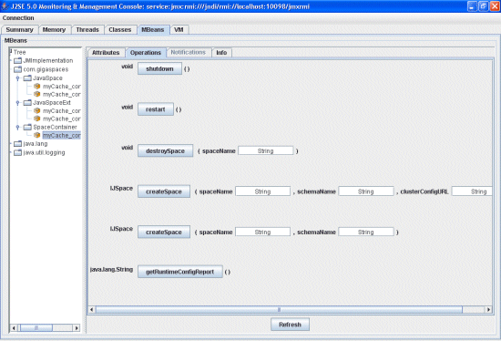
Info Tab
The container Info tab displays the MBean name and its Java class.

Space MBean
The Space MBean exposes space attributes and operations. You can get the basic space operational settings using this MBean.
Attributes Tab
The space Attributes tab displays a list of space attributes/elements by XPath, in the selected space. Attribute values appearing in blue can be controlled, while values in black can not be changed. Red values are unavailable.
For details on specific configuration file elements, refer to the Configuration Files Element List*** section.

Operations Tab
The space Operations tab allows you to perform different space operations:
- getSpace – returns the space proxy that this manageable bean governs.
- getStatistics – returns a StatisticsContext according to the operation code you type in the operationCode text box – each operation has a constant representing it.
For a list of operation codes, see Javadoc and the statistics filter operation codes list.
For more details, see com.j_spaces.core.admin.StatisticsAdmin or com.j_spaces.core.filters.StatisticsContext.
- clean – cleans the selected space.
- count – when entering a specific class name in the className textbox, displays the number of Entries in this class.
- clear – when entering a specific class name in the className textbox, removes the Entries that match this template from the space.
- stop – attempts to stop the selected space.
- start – attempts to start the selected space.
- ping – checks whether the space is alive and accessible.
- restart – restarts the space.
- getClusterPolicy – displays a cluster policy instance.
- getRuntimeInfo – returns a RuntimeInfo instance.
For more details, see Javadoc.
- getURL – displays the spaceURL instance which was used to initialize the space.
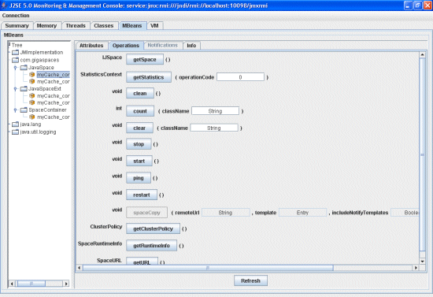
Info Tab
The space Info tab displays the MBean name and its Java class.
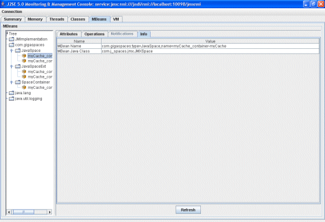
Space MBean Extension
The Space MBean Extension exposes advanced space attributes – this includes memory management, persistency and communication settings.
Attributes Tab
The space extensions Attributes tab displays a list of advanced space attributes/elements by XPath, in the selected space. Attribute values appearing in blue can be controlled, while values in black can not be changed. Red values are unavailable.
For details on specific configuration file elements, refer to the Configuration Files Element List*** section.
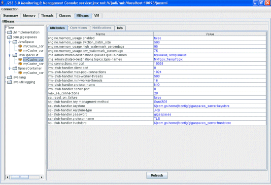
Info Tab
The space extensions Info tab displays the MBean name and its Java class.

Restricting and Modifying MBeans
There is an option to restrict the access to space and space container operations or attributes; for example, you can decide to hide some of the attributes and configuration, and disable execution of operations.
 This way, you can view, restrict or modify most of the space and space container configuration (as set in the space/container schema files), or the basic admin operations, which were discussed in the above sections.
This way, you can view, restrict or modify most of the space and space container configuration (as set in the space/container schema files), or the basic admin operations, which were discussed in the above sections.
To do this, modify the following space and space container MBean Descriptors, which are located inside the <GigaSpaces Root>\lib\JSpaces.jar file:
- ContainerMBeanDescriptors.xml
- JavaSpaceExtMBeanDescriptors.xml
- JavaSpaceMBeanDescriptors.xml
Settings to Modify
Following are some space/space container MBeans Attributes settings you can modify:
- Attribute – required, otherwise is optional.
- name – the name of the attribute.
- type - The type or class name of the attribute.
- description – a description of the attribute.
- isReadable – true if the attribute has a getter method, false otherwise.
- isWritable – true if the attribute has a setter method, false otherwise.
Following are some space/space container MBeans Operations settings you can modify:
- Operation – required, otherwise optional.
- name – the name of the method.
- type – the type of the method's return value.
- impact – the impact of the method, one of INFO, ACTION, ACTION_INFO, UNKNOWN.
- description – a description of the operation.
- signature – MBeanParameterInfo objects describing the parameters (arguments) of the method.
- Signature – the list of parameters info.
- Parameter – required, otherwise optional.
- name – the name of the data.
- type - the type or class name of the data.
Getting Space Statistics using the JMX API
***Link required